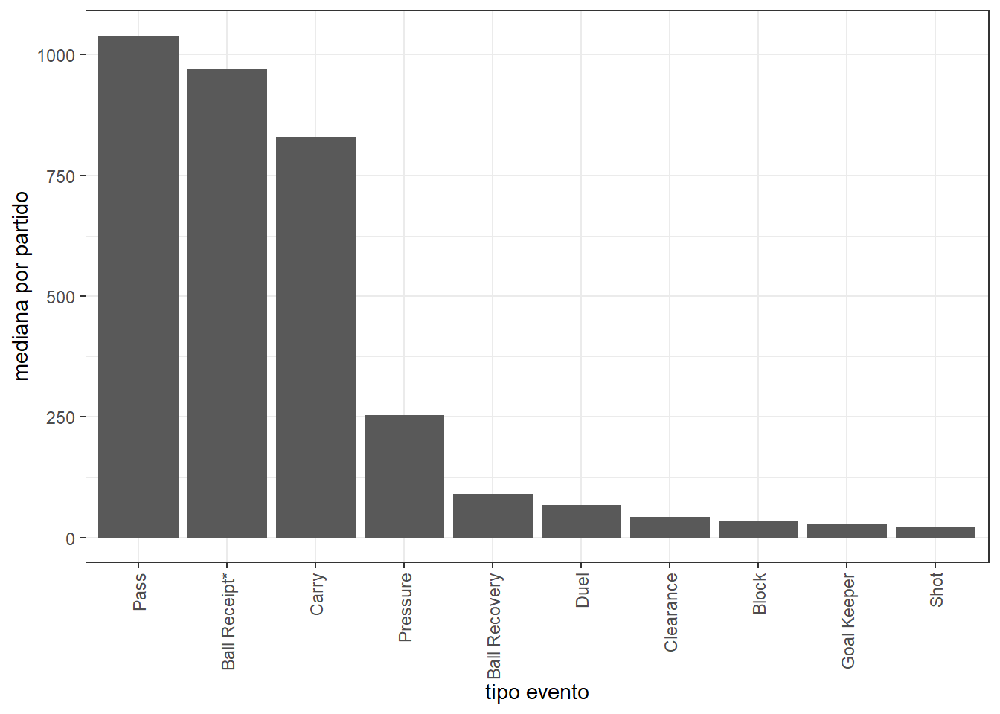
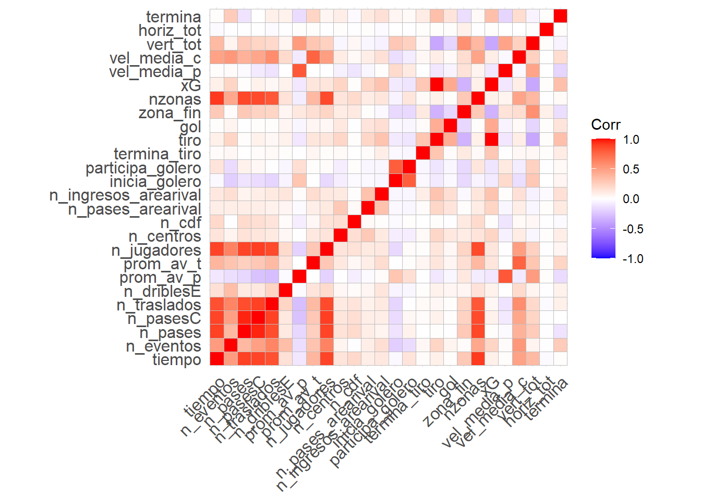
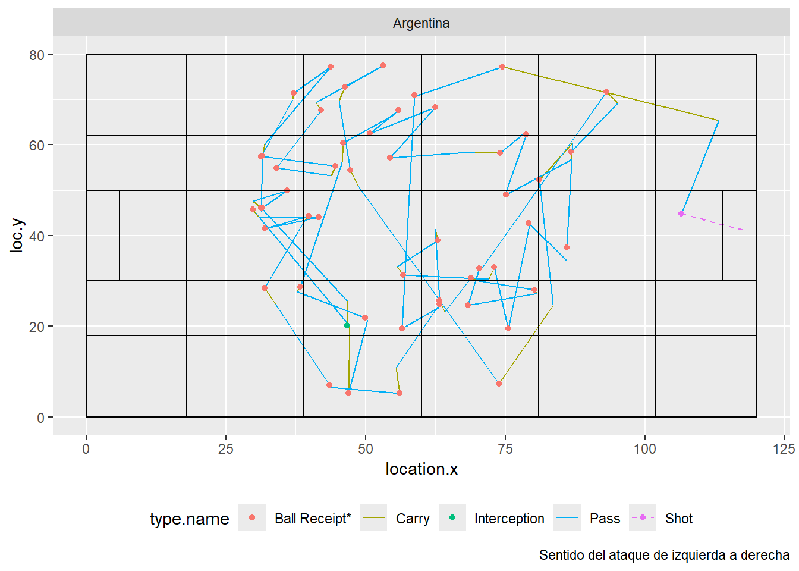
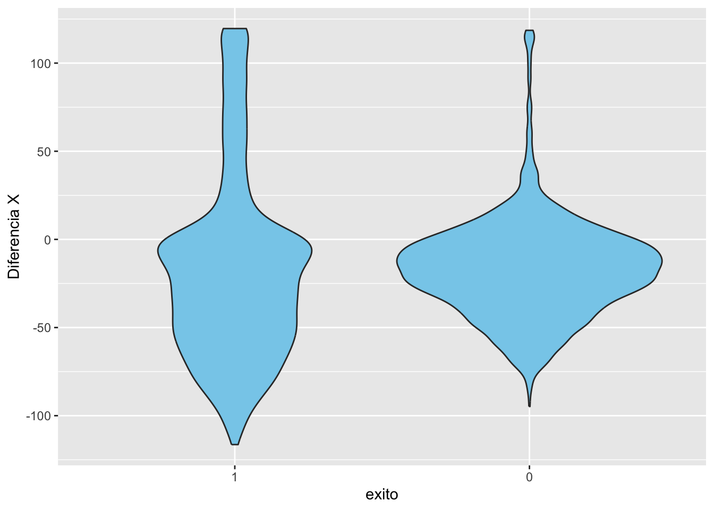
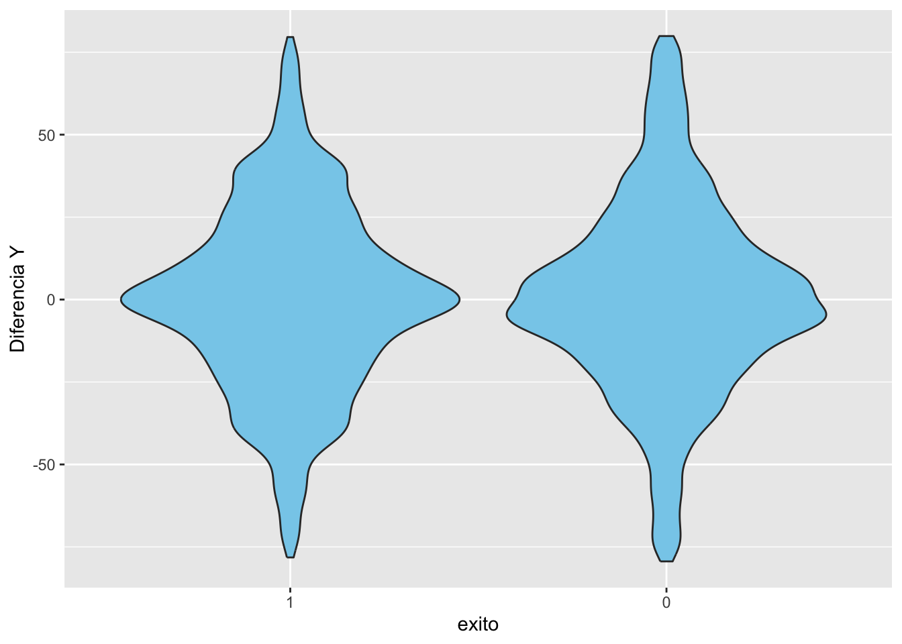
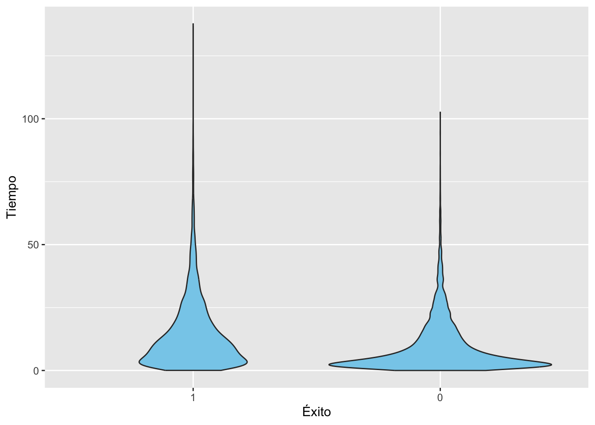
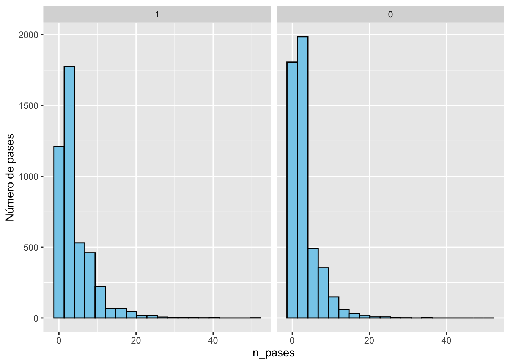
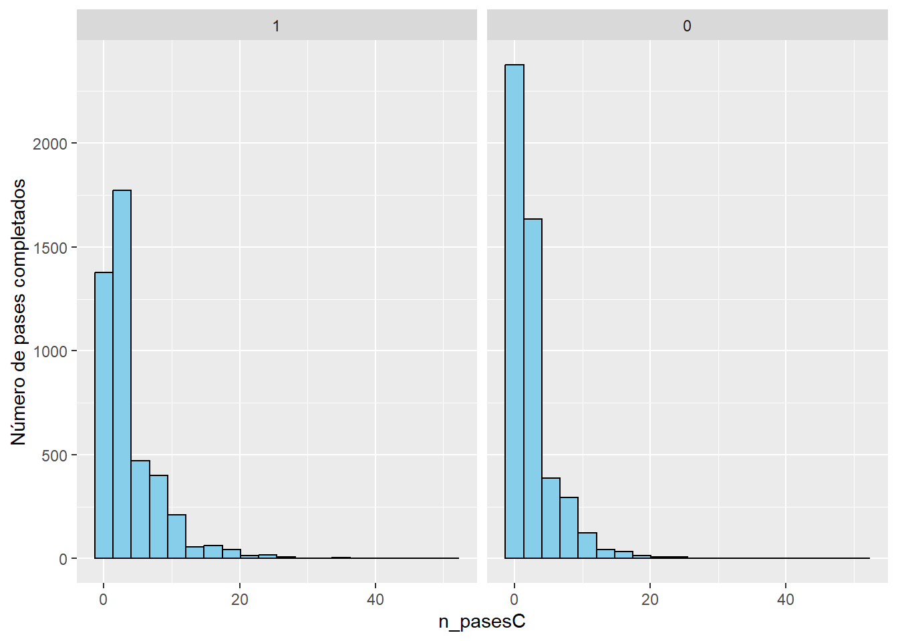
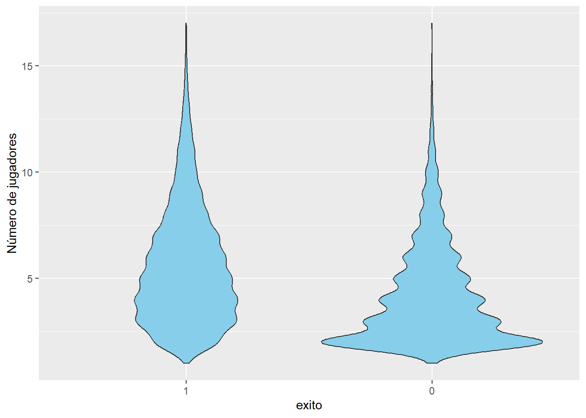
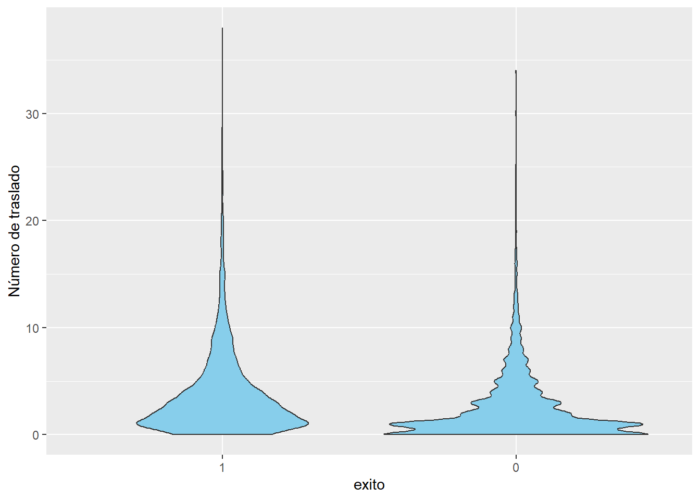

Entrega Final de curso
Resumen de la base
Eventos
El objetivo del presente trabajo es encontrar y modelar los determinantes de éxito de una posesión en el contexto de un partido de fútbol. Para ello, se cuenta con información relativa a los 64 partidos de los mundiales masculino y femenino disputados en Qatar en 2022 y Australia/Nueva Zelanda en 2023, respectivamente. Concretamente, los datos refieren a datos de eventing de la consultora especializada StastBomb y se obtuvieron a través de su paquete en R ‘StatsBombR’. Los datos de eventing refieren al registro de cada una de las acciones que realizan los jugadores con la pelota en cada uno de los partidos. Dicha base está compuesta por los distintos eventos que se realizaron en el transcurso de cada encuentro y variables asociadas a cada tipo de evento según corresponda (184 variables y 459967 observaciones entre los 2 mundiales). Se considera un evento cada una de las acciones realizadas ya sea por los jugadores (pases, tiros al arco, atajadas, regates, traslados de balón, …) así como del resto de los actores de un partido (cambios, tarjetas, inicio/final de partido, entre otras). Las posesiones están compuestas por varios de estos tipos de acciones. En este caso, la base cuenta con 33 tipos de eventos distintos. Algunos de estos eventos no refieren específicamente a situaciones de juego tales como incios y finales de partidos, sustituciones de jugadores, formaciones iniciales, tarjetas mostradas por el juez, cambios tácticos, sueltas neutrales de balón y pausas en el partido ya sea por lesión u otra situación excepcional. Estos eventos no serán tenidos en cuenta en el análisis ya que se considera que no aportan nada desde el punto de vista del juego y de las posesiones dentro del mismo.
En ese sentido se trabajará con las acciones de juego que involucren la pelota o la disputa de ésta. Mayoritariamente tenemos pases pero también se registran traslados con pelota controlada (Carry), recepción de balón (Ball Receipt), acciones defensivas de presión hacia un rival (Pressure), recuperaciones de pelota (Ball Recovery), duelos (Duel), despejes (Clearance), tiros al arco (Shot), regates (Dribble), atajadas(Goal Keeper), entre otros.
En este contexto se buscará estudiar las distintas secuencias de los equipos en cuanto tienen la posesión a su favor (possession). En ese sentido, tomando en cuenta ambas copas del mundo se cuenta en total con un promedio de un poco más de 177 posesiones por partido para el mundial masculino mientras que un poco menos de 193 para el femenino.


Por lo tanto, nuestra observaciones pasarán a ser las posesiones y no los distintos eventos. A estos efectos, con la información contenida en los datos de eventing conformó una base que nos permita describir cada una de estas secuencias para su posterior estudio y clasificación. Para ello, en una primera instancia, no se trabajará con todas las posesiones sino que por simplicidad nos quedaremos únicamente con aquellas posesiones en las cuales las acciones en las mismas son realizadas por el equipos poseedor del balón o, en su defecto, que las acciones del rival no involucren directamente la pelota: acciones de presión, faltas cometidas o recibidas, atajadas del golero y/o jugadores dribleados del conjunto que esta defendiendo (Dribbled Past). De esta manera la trayectoria de la pelota se ve únicamente afectada por las acciones realizadas por el equipo que tiene la posesión y no por el rival. Nos quedaremos finalmente con 4961 posesiones a nivel masculino y 4409 del mundial femenino para estudiar la trayectoria de la pelota en estas secuencias.
Características de las posesiones
A través de los datos de eventing se generará una nueva base que contenga características de las casi 10000 secuencias a estudiar. La elección de dichas características es un tanto arbitraria pero se entiende que pueden ser de valor o utilidad a la hora de describir o encontrar ciertos patrones o estilos de juego: coordenadas de inicio y fin de la posesión (así como las zonas de inicio y fin), cantidad pases (totales y exitosos), de traslados (totales y exitosos), de tiros y de eventos en general realizados, cantidad de centros, cambios de frente, ingresos al área rival con pelota controlada y pases dentro del área, promedio de avance en el terreno según sea por pases o traslados con pelota controlada, si la jugada es iniciada por el golero, si éste participa o no, si termina en tiro o en gol, o incluso variables del estilo de la velocidad promedio de la posesión cuando los pases y las conducciones con la pelota se realizan hacia adelante.

División en zonas
También podría ser útil tener en consideración no sólo dónde inició y terminó cada jugada sino que también de alguna manera replicar la trayectoria de la pelota en la secuencia. Para ello, se propone dividir la cancha en zonas y analizar hacia dónde el equipo llevó el balón y por cuántos sectores (zonas) del terreno pasó la pelota en la jugada. Cabe aclarar que para el conteo de zonas se tendrá en cuenta únicamente aquellas zonas dónde se realizaron acciones y no necesariamente por dónde pasó la pelota.


Idea del modelo
El objetivo del modelo es clasificar las jugadas en exitosas o no exitosas, con el criterio de éxito definido subjetivamente. Para esto, se analizarán distintas características de cada jugada, buscando identificar las variables que permitan predecir con mayor precisión si una jugada será exitosa o no.
Después de la descripción de los datos, se propone la creación de una variable objetivo (a predecir) denominada “éxito”, que tomará un valor binario para representar el éxito o fracaso de cada jugada.
A continuación, se realizará un análisis exploratorio de datos (EDA) enfocado en esta variable de éxito, observando cómo se comporta en función de las características de las jugadas. Este análisis permitirá identificar patrones y relaciones que puedan ser útiles en la clasificación y mejora del rendimiento del modelo.
La variable éxito se define a partir de la categorización de las jugadas: si la jugada termina en un tiro al arco, en un córner a favor, si la mayoría de las acciones se realizan bajo presión del rival y pese a ello se logra mantener la posesión, si la secuencia logra llegar hasta el área rival, si la posesión comienza en campo propio y logra llevar al tercio final con al menos 3 acciones y finalmente si el rival no logra recuperar la pelota y comete falta.
Tanto las trayectorias en las que el rival logra recuperar la pelota así como aquellas que no cumplen ninguna de las 6 condiciones mencionadas se califican como no exitosas (variable exito=0)
Variables a usar
| Características de las Variables para el Modelo | ||
|---|---|---|
| Variable | Descripción | Tipo |
| possession | Posesión del balón | Numérica |
| period | Período del partido | Categórica |
| possession_team.id | ID del equipo en posesión | Numérica |
| possession_team.name | Nombre del equipo en posesión | Categórica |
| team.name | Nombre del equipo | Categórica |
| x_inicio | Coordenada X de inicio | Numérica |
| y_inicio | Coordenada Y de inicio | Numérica |
| x_fin | Coordenada X de fin | Numérica |
| y_fin | Coordenada Y de fin | Numérica |
| n_eventos | Número de eventos | Numérica |
| n_pases | Número de pases | Numérica |
| n_pasesC | Número de pases completados | Numérica |
| n_traslados | Número de traslados | Numérica |
| prom_av_p | Promedio de avance en pase | Numérica |
| prom_av_t | Promedio de avance en traslado | Numérica |
| n_jugadores | Número de jugadores en la jugada | Numérica |
| n_centros | Número de centros | Numérica |
| n_cdf | Número de centros fallidos | Numérica |
| n_pases_arearival | Número de pases al área rival | Numérica |
| n_ingresos_arearival | Número de ingresos al área rival | Numérica |
| inicia_golero | Si la jugada inicia con el golero | Binaria |
| resultado | Estado del marcador al momento de la jugada | Categórica |
| zona_inicio | Zona de inicio | Categórica |
| zona_fin | Zona de fin | Categórica |
| xG | Ni idea | Numérica |
| vel_media_p | Velocidad media en pase | Numérica |
| vel_media_c | Velocidad media en conducción | Numérica |
| exito | Resultado de éxito | Binaria |
EDA

Se observa una dispersion mayor de la diferencia en la diferencia en el eje X en las jugadas exitosas que en las no exitosas. Además, se observa que la mayoria de las jugadas exitos estan concentradas respecto a 0, lo que tiene sentido ya que son jugadas que empiezan y termunan en el mismo lugar.

En este caso el coportamiento no es diferente entre si las jugadas son exitosas o no.

Aunque la mayoria de las jugadas tanto exitosas como no exitosas se concentran cercanas a tiempo 0 , la concentración en 0 es mucho mayor en las jugadas que no exitosas.


Aunque los histrogramas son similares , no es un detalle menor la moda de la cantidad de pases en la jugada, que es mayor en las jugadas exitosas que en las no exitosas.


Tanto en la cantidad de traslados como en la cantidad de jugadores que participan en la jugada, se observa una mayor concentranion de valores cercanos a 0 en las jugadas que no son exitosas que en las que son exitosas.
Modelos
Se proponenen 3 modelos distintos para el problema de clasificación de la variable exito. Uno logistico, un random forest y un LightGBM. La idea es usar la regresión logística para entender como influyen los distintos factores en la variable exito sin perder la interpretabilidad de los resultados. Los otros dos se prponen más con la idea de predecir la variable exito usando la información que se tiene en el conjunto de datos. Se eligen estos modelos uno produce menos overfitting(random forest) y otro produce menos error en la validación(LightGBM).